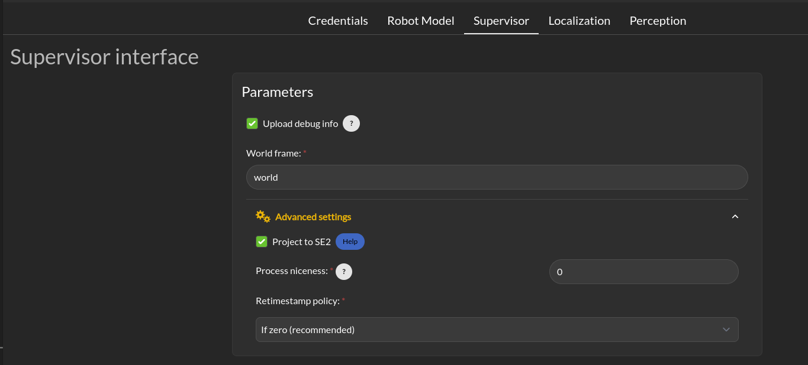
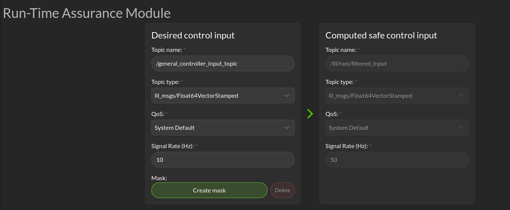
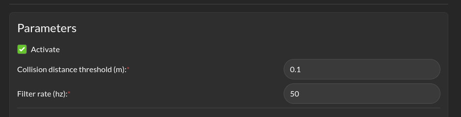
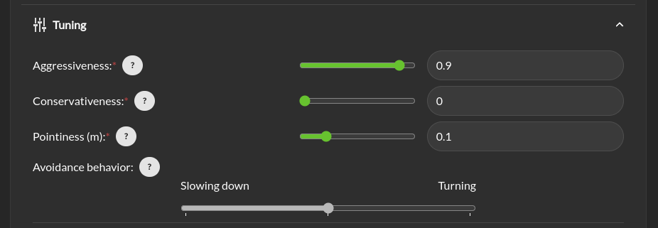
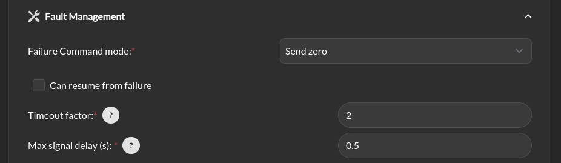
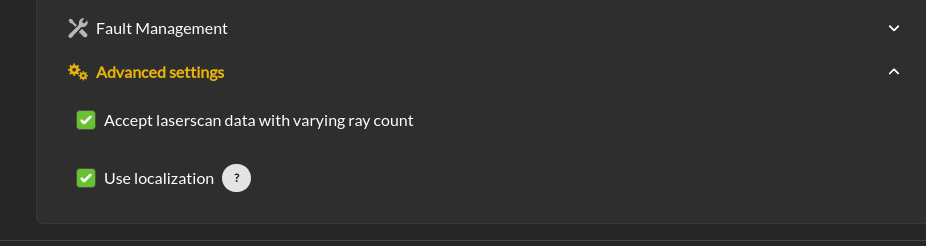
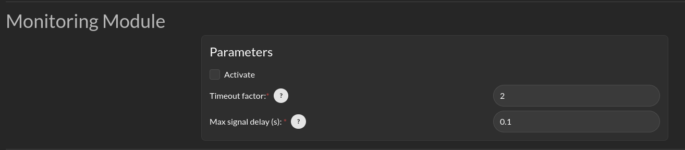
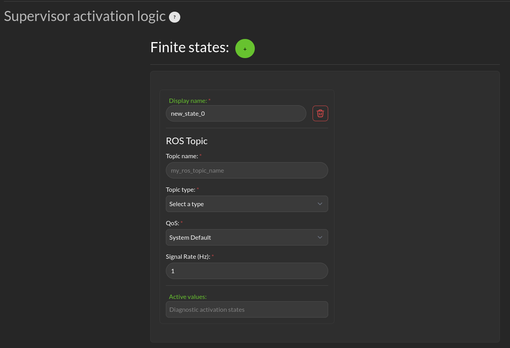

Supervisor
This page contains configuration entries for both the monitoring and Run-time Assurance Module components.
Supervisor Interface
{kind=link}
Upload log to 3laws robotics cloud: For debugging purposes, 3Laws creates a log file when Supervisor is started. The file is stored in ~/.3laws/logs. Enabling this option allows 3Laws to provide better support with troubleshooting if there is a problem.
World Frame: Similar to “base robot frame”, the name of the world frame (typically odom or map) must be specified.
Advanced Settings > Project to SE2: By default, the system is assumed to operate in 3-dimensional space. Projecting to SE2 assumes that the vehicle is traveling on a flat surface or that its travel distance is small enough that earth curvature effects are not significant. When mapping from 3-dimensional space to 2-dimensional space, the system is assumed to have zero roll and pitch while being placed on the ground. No rotational velocities or acceleration are assumed around roll and pitch, and zero vertical velocity and acceleration are assumed. This will also map the received state to the SE2 state space. An information modal is available to describe the mapping.
Advanced Settings > Process niceness: The computational priority of the Supervisor node can be set through the “niceness” parameter, where -20 would set it as very high priority and +19 would be very low priority. A niceness of zero is recommended. (Please review documentation on setting priority in Linux using “nice” for a deeper explanation.)
Advanced Settings > Retimestamp policy is used to add or correct the timestamp on log messages that seem to have an incorrect one. Leaving the timestamp unchanged is also an option.
Run-time Assurance Module
Desired Control Input and Computed Safe Control Input
{kind=link}
This is where you can define the ROS topic that the Supervisor should listen to for the desired control input. It takes as entries the topic name, its type, Quality of service, signal rate and an optional mask.
General Parameters
{kind=link}
Desired control input: This is the set of commands requesting speed and rotation (or speed and steering) that the autonomy stack is publishing. The ROS message type is needed so that Supervisor knows what to monitor in order to calculate the barrier function value. The message quality and receipt rate are monitored as part of the aggregated metrics, and if it fails to arrive within the expected time [1/(signal rate) * Timeout factor], an event will be created and the Run-time Assurance Module will transition to the failure command mode.
Computed safe control input: The right side of this area is purely informational. However, if the robot is to be controlled by the run-time assurance signal, it needs to subscribe to the message that is presented here. Alternatively, the launch file for Supervisor can be modified so that /lll/ram/filtered_input is remapped to the command signal expected by the platform.
Parameters > Activate: This checkbox controls whether the run-time assurance intercepts and modifies commands from the planner/trajectory generator and forwards modified versions to the vehicle. The Run-time Assurance Module will only modify the outputs if the option is activated. If it is not activated, the unmodified “desired control input” will be transmitted on the designated “Computed safe control” message. Additionally, when activated the Run-time Assurance Module passes the unmodified desired input through to the platform except when a corrective action is needed.
Parameters > Collision distance threshold: This is one of the most important values to set. This defines the distance between the edge of the robot and the nearest scan at which safety exists. If the measured distance drops below this value, the system is considered to be in an “unsafe” configuration.
Parameters > Filter rate (hz): The frequency at which the run-time assurance publishes outputs. It is recommended that the run-time assurance run at the same rate as the desired control input or at a faster rate.
Tuning
{kind=link}
Tuning > Aggressiveness: This parameter controls how far from the nearest obstacle the safety filter starts having more effect on the commands and how strongly the safety filter pushes the robot back into the “safe” region if the safety definition has been violated. A larger value means that the control inputs from the planner will start to be modified when the robot is closer to an object/obstacle. That is, a larger value allows the platform to approach objects faster, and get closer. If it gets too close, the Supervisor will push away from the object harder with a higher value. A lower value will lead to a more tentative travel that stays farther away from objects. In general lower values will produce larger margins. Typical values are between 0.5 and 1.0, but values in the range of 1000 might be used in reasonable situations.
Tuning > Pointiness: A rectangular (box) shape has an unintended behavior that if the robot comes towards a narrow object directly in front of it, the closest point calculation will select the center-line of the box as the evaluation point for distance. If the outer corners get closer to the object, the barrier function will want to increase the distance between the object and the box, so it will tend to center the box relative to the object. A more desirable behavior is for the box to turn away from the object to be able to get around it. The pointiness parameter is a way of accomplishing this. If the box has a nose with sharper curvature, the barrier function will push it away from the object laterally, rather than simply trying to increase the measured closest distance between the box and the object. So increasing the “pointiness” will encourage the vehicle to “turn away” from obstacles that are directly in front.
Tuning > Avoidance Behavior: Similar to pointiness, the alternate behavior can also be selected as choosing to slow down more or choosing to turn away from the object more as the commanded (desired) input drives the platform towards an object.
Fault Management
{kind=link}
Fault Management > Failure Command Mode: The run-time assurance constantly monitors to ensure that it has enough data to determine whether the robot is in a safe condition. The minimum data required is the vehicle state, the laser scan values, and the commanded/desired input. If any of these is missing the RTA can switch to the failure command mode:
Send Zero: In this mode the run-time assurance commands zero speed and zero turn/rotation in order to bring the vehicle to a stop.
Do not Publish: Another option is to stop publishing values. This option should only be used if the robot has its own mechanism to put itself in a safe condition if it is not receiving commands.
Fault Management > Can resume from failure: With this checkbox filled in, once the input data (control input, laser scan, and state) values start appearing after a failure, the robot will be commanded back into motion (if the desired control input is asking for that). If the box is unchecked once there is a failure, the robot will remain stopped until the Supervisor is restarted.
Advanced Settings
{kind=link}
Advanced Settings > Accept wrong size laserscan: One of the checks that is made on the incoming data is that the laserscan is delivering the expected number of scan points each frame. However, there are many laser scanners that are not consistent in the number of scan points they deliver. Checking this option allows for laser scanners with non-constant number of scan points reported.
Advanced Settings > Use localization: Supervisor provides a MarkerArray that displays the robot’s bounding box and rays to the closest obstacles. If “Use Localization” is set, the display is created relative to the world frame. In situations where the localization may be less reliable, this checkbox can be deselected, and the visualization will be based on the current robot base frame. Localization is also very useful if the control rate is low (e.g. longer times between commands) or there are delays between sensing and actuating. If the robot’s motion is large during the time period of the control calculation, the model will account for it as long as localization is accurate.
Monitoring Module
{kind=link}
Supervisor can publish a variety of diagnostic messages related to the health of the system clock, the dynamic consistency of the motion of the platform, individual node health, signal coherency, and summarized system health. The published messages are discussed in Ros Topics. These messages in the /lll/rdm domain are only published if the Monitor is set to Active.
Activate: Enable publication of the diagnostic messages through the /lll/rdm domain. Faults detected in these variables do not cause Run-time Assurance Module to switch to the failsafe mode.
Timeout Factor: Allows this many messages at the expected arrival rate to be missed before reporting an error.
Maximum Delay (s): Maximum amount of time that a message can fail to appear before reporting an error.
Supervisor activation logic
{kind=link}
The bottom section relates to republishing the control commands to the robot that are being sent from the autonomy stack. The values will be published on the lll/ram/filtered_input channel if the Run-time Assurance Module is activate or not. However, the values will only be different from the Desired control input if the Run-time Assurance Module is active.
Finite States are messages that the Diagnostics can listen to and issue events when the value of the finite state matches a predefined value.